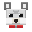

RMC—01
Rápido
Diseñado para ofrecer una experiencia de inicio rápida y sencilla.

RAGSMC LAUNCHER
Cargando mundo...
Consejo:
Proyecto independiente · En desarrollo
Un launcher de Minecraft rápido, simple y con identidad propia. Hecho por jugadores, para jugadores.
Disponible para Windows · macOS y Linux próximamente.
Sobre el proyecto
En desarrollo
RagsMc Launcher es un proyecto independiente creado con el objetivo de ofrecer una experiencia moderna y personalizada para jugar Minecraft desde un único lugar.
Actualmente se encuentra en construcción. Cada sistema, pantalla y decisión está siendo pensado para crear una base sólida, rápida y preparada para crecer.
El núcleo
Una base enfocada en lo importante, preparada para evolucionar junto al proyecto.
Diseñado para ofrecer una experiencia de inicio rápida y sencilla.
Pensado alrededor de la experiencia de Minecraft.
Preparado para futuras opciones de personalización.
Preparado para gestionar diferentes versiones de Minecraft.
El proyecto continúa evolucionando constantemente.
Nuevas características serán incorporadas progresivamente.
Galería
La estética y el ambiente que guían el diseño del proyecto.
Imágenes conceptuales de referencia. No son capturas del launcher.
Ruta de desarrollo
El avance será progresivo: primero una experiencia estable y clara; después, nuevas posibilidades. Sin promesas vacías.
Fase 01
Diseño y concepto inicial.
CompletadoFase 02
Construcción del launcher.
ActualFase 03
Pruebas, correcciones y estabilidad.
PendienteFase 04
Primera versión pública estable.
PendienteFase 05
Mejoras y nuevas funciones.
PendienteAvance del launcher
Capturas reales del desarrollo. Sin renders ni promesas: esto es lo que ya existe hoy.
Iremos publicando cada avance aquí mismo.
Comunidad
Contenido, avances y directos del proyecto.
Descarga
Ya disponible para Windows. macOS y Linux llegarán próximamente.
Instalador de 73 MB, gratis y sin registro.
¿Dudas o sugerencias? Habla con nosotros en la comunidad. Ir a la comunidad